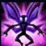
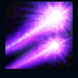
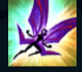
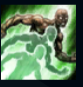

Lulu

| Lulu The Fae Sorceress | |
|---|---|
| Release date | 20.03.2012 |
| Class | Enchanter |
| Positions | Support |
| Resource | Mana |
| Range type | Ranged |
| Adaptive type | Magic |
| Base statistics | |||
| Health | 525 – 1783 | Mana | 350 – 1285 |
| Health regen. | 6 – 16.2 |
Mana regen. | 11 – 21.2 |
| Armor | 29 – 91.9 | Attack damage | 47 – 91.2 |
| Magic resist. | 30 – 38.5 | Crit. damage | 175% |
| Move. speed | 330 | Attack range | 550 |
Ca mag yordle, Lulu este cunoscută pentru faptul că poate invoca iluzii și creaturi onirice în timp ce cutreieră Runeterra alături de zâna Pix. Lulu modelează realitatea din pure capricii uneori, alterând structura lumii și înlăturând limitele planului fizic, pe care ea le vede doar drept constrângeri. Chiar dacă alții consideră că vrăjile ei sunt nenaturale sau periculoase, Lulu crede că toată lumea are nevoie de un strop de magie. |  |
PIX, ZÂNA ÎNSOȚITOARE Pix trage cu fulgere magice de energie când campionul pe care îl urmărește atacă altă unitate inamică. Aceste fulgere își urmăresc ținta, dar pot fi blocate de alte unități. |
||
|---|---|---|---|---|
 |
VAL DE SCÂNTEI Pix și Lulu trag amândouă un fulger de energie magică ce încetinește puternic toți inamicii loviți. Un inamic poate fi lovit de un singur fulger. |
|||
CAPRICIU Dacă este folosită asupra unui aliat, îi conferă viteză de atac și viteză de mișcare pentru scurt timp. Dacă este folosită asupra unui inamic, îl preschimbă într-un animăluț drăguț care nu poate ataca sau folosi vrăji. |
||||
|  |
PIX, AJUTOR! Dacă este folosită asupra unui aliat, lui Pix i se ordonă să sară la un aliat și să îl protejeze, iar apoi să îl urmeze și să-l ajute să atace. Dacă este folosită asupra unui inamic, lui Pix i se ordonă să sară la un inamic și să îi provoace daune, după care îl urmărește și îți permite să îi supraveghezi mișcările. |
|||
 |
CREȘTERE SĂLBATICĂ Lulu mărește un aliat, oferindu-i acestuia o cantitate mare de viață bonus și aruncând în sus inamicii aflați în apropiere. În următoarele câteva secunde, acest aliat primește o aură care îi încetinește pe inamicii din apropiere. |